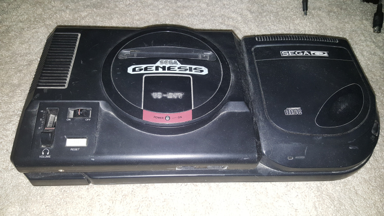

NES
The Nintendo Entertainment System, often referred to as the NES was the first
video game system released by Nintendo in the United States in 1985. The NES was
massively popular, selling 30 million units in the United States alone. The NES features
8-bit graphics and a color pallet of 52 colors. These graphics were very impressive at the
time over systems such as the Atari 2600. Popular games for the NES include
Super Mario Bros.,
The Legend of Zelda,
and Mega Man.
Super Nintendo Entertainment System (SNES)
The Super Nintendo Entertainment System (SNES) was the successor to the original NES
released in the United States 1991. The SNES had improved 16-bit graphics, a color palette
256 colors and maximum resolution of 512x448. Some of the best games for the SNES include
Super Mario World,
Super Metroid,
and Earthbound.
Sega Genesis

Released in 1989, the Sega Genesis was Sega's second console in the United States video game market,
and rival console to the SNES. The Sega Genesis featured 16 bit graphics, a color palette of 512 colors
and a maximum resolution of 320x224. Pictured attached to the Genesis is the later released CD attachment.
Some of the best games for the Sega Genesis include
Sonic the Hedgehog,
Golden Axe,
and Altered Beast.
Dreamcast
The Sega Dreamcast was Sega's last videogame console. Released in 1999, the Dreamcast featured
revolutionary 3D graphics and a built in CD player. Some of the best games for the Dreamcast include
Crazy Taxy,
Jet Set Radio, and
Soul Calibur.
Bootstrap and Bootstrap vs. WordPress
Bootstrap Classes I used:
1. Collapse/accordian
The collapse class can be seen at the bottom of the main page for the sources of my website. Usually people find this part
boring and do not want to look at it so I thought it would be nice to have an accordian style collapsable part of the page
which people can easily access, look at quick and get out of. The collapse class for Bootstrap is useful for hiding parts
of a page and allowing users to immediatly expanded or collapse it.
2 and 3. card-header and card-body
The card feature of bootstrap is used for creating parts of a page which are distinguished from the rest of the content and
pop out. My collapsable content for the sources was a card which was minimized until the user chose to expand it. As part
of the card there are 2 classes: card header and card body. The card header in this case was where the word "Sources" was
displayed, while the card body was filled with the content, in this case, the list of my sources. I also changed the background
color and opacity of the card header and card body to be aesthetically pleasing to the rest of the site.
4. Rounded
Rounded is a class which can be used with elements in bootstrap to soften the borders of such elements. Because all the
images on my site have sharp edges as corners, I thought it would be better looking if instead they had rounded corners.
You can see this on all the images on my site.
5. alert-dismissible
The alert-dismissible class in Bootstrap allows for a window to appear on screen to alert the user of some particular
action or warning. I thought this would be useful for a small business website to alert customers of some closing for a
holiday or changed business hours. Because I could not find any such closings for this business, I chose instead to alert
customers that there may be something new in stock and to check for sales, which is always useful information. It can be
seen every time the page is visited.
6. Button
The button class in Bootstrap is as simple as it is for CSS or HTML. However, because many people use bootstrap, such
buttons have become synonymous with certain meanings and bootstrap has programmed in color coordinated types of buttons
for such meanings. The one I chose for the link to my github page was the btn-info. btn-info has a color and text to
convey to the user that a button will provide more information on something, which is what my github page is designed for.
7. Pagnation
The pagnation class allows users to go to different pages and skip around to different sites or parts of the site. I
used pagnation to allow users to skip to different pages with info on the different consoles. You can even use the next
and previous buttons to view the pages in there intended chronological order.
8. Flexbox
Flexbox is used to arrange items on the screen and dynammically flex them in order for the adjustments on screen. I used
this to arrange 2 items side by side on the main page. A carousel of screenshots for the games and an image of the storefront
of Gamefortress if the page shrinks so do these items in size.
9. carousel
The carousel class is used to show a rotation of elements on screen. Displaying images and taking up less space. I used this class
on the main page to show a rotation of screenshots for the games that I am advertizing. The user can navigate using the arrows
and view each image whenever they want.
10. media
The media class allows for media on the site to be displayed with a title and caption. I recently found out there is a javascript
based NES emulator which can be played in browser. In order to properly credit it and direct the user what to do. I used the media
class to display this on the NES page.
Pros of Bootstrap: Bootstrap is much more custom and can be highly taylored to the exact specifications of the designer.
When using Bootstrap, there are prebuilt assets and templates already built by other people, and because Bootstrap is
open source, you can see how these assets work and modify them if you have the knowledge.
Should you want to create your own framework similar to bootstrap, you can even visit the bootstrap Github and view
the source for the entire project.
Cons of Bootstrap: Bootstrap has the prerequisite of HTML and CSS knowledge. It is very hard for a small business owner
with little technical experience to use bootstrap to create their website from scratch because often there is a moderate
learning curve. Additionally, bootstrap is always being updated and creating a website with Bootstrap will require some
maintanence over time.
Pros of wordpress: With Wordpress there is no learning curve. Anyone who has a small business and wants to create a
website can do it for free with no coding knowledge required. This is good for basic websites who's only need is to
advertize and provide information on their website. Wordpress is also great for blogs and for when information needs
only to be conveyed as it happens and not in a complicated or extravigant manner.
Cons of Wordpress: Wordpress is very generic and anyone who uses it is limited by the templates they have available,
which are not as customizable. Some templates and features of wordpress are locked behind a paywall.